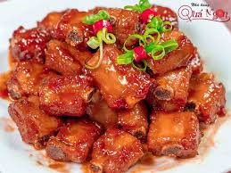

TUNA SASHIMI
15 min.
Easy
Sashimi is a Japanese delicacy consisting of fresh raw fish or meat sliced into thin pieces and often eaten with soy sauce.

2 persons
Ingredients
- 500g sashimi-grade tuna
- 2 avocados, flesh cut into thick slices
- Soy sauce for dipping
Tools
- Sharp knife
- Cutting board
Directions
- Prepare the tuna by slicing it into thin pieces.
- Arrange the tuna and avocado slices on a plate.
- Serve with soy sauce and enjoy!